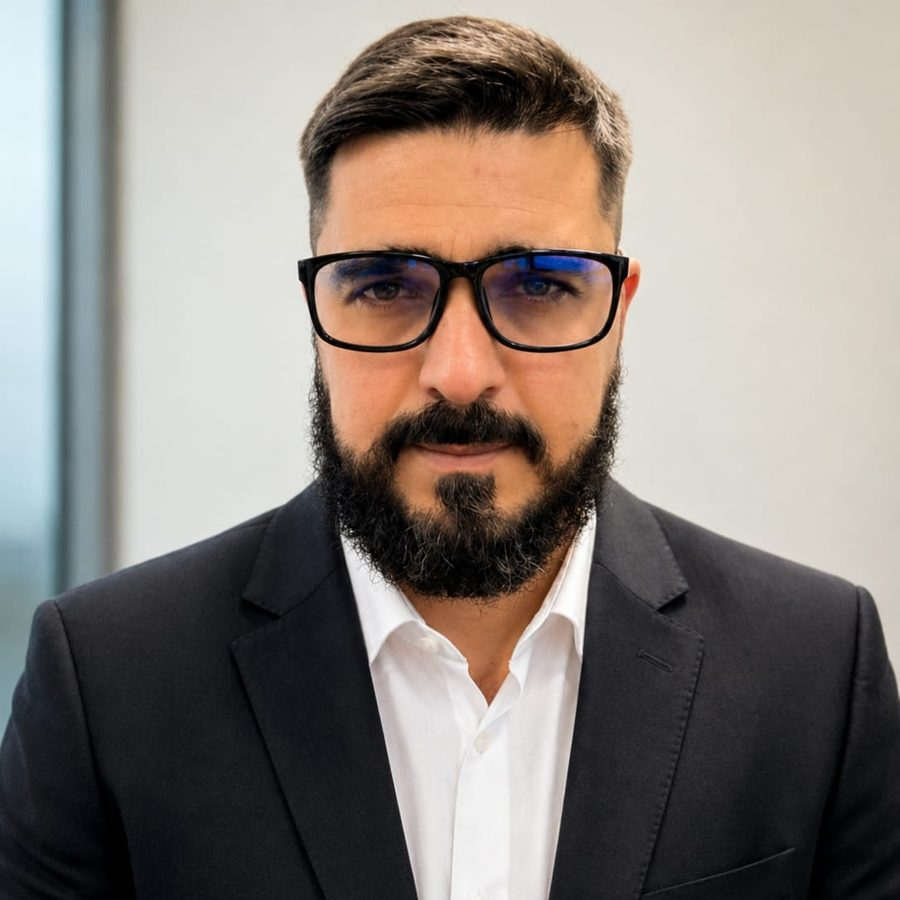

Sobre o autor
ALAN MIRANDA.
Tecnologia com contexto de operação.

FORMAÇÃO
& PESQUISA.
Mestrando em Engenharia Oceânica no PEnO/COPPE — UFRJ.
Sou bacharel em Sistemas de Informação, com experiência prática em software, hardware, Linux, redes, dados, automação, robótica e inteligência artificial. Direciono essa visão multidisciplinar à robótica avançada, aos sistemas remotos e à operação em ambientes complexos.
Currículo Lattes ↗Trajetória
DA OPERAÇÃO
À TECNOLOGIA.
Operação
Vendas, logística e direção profissional (categoria AE).
Equipamentos
Diagnóstico, atendimento técnico e equipamentos corporativos.
NUCLEP
SQL Server, C#, JavaScript, manutenção, hardware e redes.
COPPE / UFRJ
Mestrado em Engenharia Oceânica, com foco em robótica e sistemas remotos.
Minha trajetória passou por vendas, prospecção de clientes, logística e operação como motorista categoria AE. Também trabalhei com equipamentos corporativos, suporte, diagnóstico e atendimento técnico. Essa experiência influencia a maneira como compreendo os sistemas antes de automatizá-los.
Na NUCLEP, entre 2020 e 2022, atuei com SQL Server, C#, JavaScript, manutenção, hardware e redes. No INCLUDE, trabalhei com robótica e automação em uma experiência de educação tecnológica ligada à Campus Party.
Competências
FERRAMENTAS DE CONSTRUÇÃO.
Software & dados
JavaScript, C#, SQL Server, Linux, redes e integração de sistemas.
IA & robótica
Agentes inteligentes, RAG, memória, automação, eletrônica e prototipagem.
Manifesto · Tecnologia e humanidade
A TECNOLOGIA DEVE SERVIR
À HUMANIDADE.
Desenvolver o futuro exige mais do que capacidade técnica. Exige consciência sobre o que estamos criando, para quem e a que custo.
“A maior tecnologia existente continua sendo a humanidade. A natureza, por sua vez, é um patrimônio que nenhuma inovação pode substituir.”
Ler manifesto e pensamentos ↗Links do autor